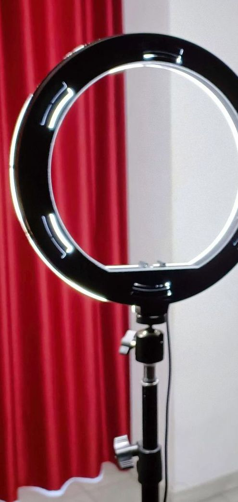

Vesikalık ve biyometrik
Pasaport, kimlik kartı, sürücü belgesi ve vize başvuruları için. Ölçüyü kurum belirler; rehber yol gösterir.
Ölçü rehberi
Türü seçin, deklanşöre basın. Sayaç film gibi geri sayar.
Vizöre bakın, kareyi seçin. Biyometrik ölçülerden düğün gününün ışığına kadar işinize yarayacak bilgiler bu sayfalarda. Tarihi sormak için tek bir WhatsApp mesajı yeterli.
Eskiden banyo edilen film şeritleri tek bir kâğıda basılırdı. Kareler yan yana görülür, beğenilen kare kırmızı kalemle işaretlenirdi. Burada da öyle: çekim türleri şeritlerde duruyor, ilginizi çekeni seçip ayrıntısına geçin.
Pasaport, kimlik kartı, sürücü belgesi ve vize başvuruları için. Ölçüyü kurum belirler; rehber yol gösterir.
Ölçü rehberiStüdyoda ya da dışarıda; bebekten büyükanneye herkes aynı karede. Kaç kişi olacağınızı yazmanız yeterli.
Çekim notlarıSöz, nişan, kına ve düğün; hikâye ve dış çekim. Tarihi ve mekânı yazın, akışı birlikte planlayın.
Süreç adım adımGün ışığında çift, aile ya da portre. Hangi saatte ışığın yumuşadığını tarih seçerek hesaplayın.
Altın saat hesabıİşletmeler için katalog, e-ticaret ve sosyal medya fotoğrafı. Ürün sayısını ve kullanım yerini yazın.
Ürün çekimi notlarıFotoğraf baskısı ve albüm. Telefonunuzdaki karenin hangi boyda net basılacağını hesaplayın.
Baskı hesaplayıcıKlip ve tanıtım çekimi. Ne istediğinizi, kabaca uzunluğunu ve nerede yayınlanacağını yazın, bilgi verelim.
Video notlarıBoş kare: sizin çekiminiz için ayrıldı.
Türü seçin, günü sorun; gerisini stüdyo ile konuşun.
Randevu seçiciKontakt baskıya büyüteçle bakılırdı. Stüdyo Dijifoto'nun Google Haritalar'daki puanı 4,9 ve 581 kişi yorum bırakmış. Yorumları burada özetlemiyoruz; kaynağında, ilk elden okuyun.
Stüdyonun kendi çalışmalarını Instagram hesabında görebilirsiniz. Bu sitedeki fotoğraflar ise yalnızca atmosfer için seçilmiş temsili görsellerdir.
Seçici, çekim türüne göre yalnızca gereken soruları sorar ve cevaplarınızı düzgün bir mesaja çevirir. Hiçbir şey kendiliğinden gönderilmez; mesajı WhatsApp'ta siz gönderirsiniz.
Vesikalık, düğün, dış çekim ya da ürün. Seçtiğiniz anda deklanşör kapanır, vizör o çekime ayarlanır.
Belge türü, kişi sayısı, etkinlik ya da ürün adedi. Bilmediğiniz yeri boş bırakabilirsiniz.
Takvimden günü ve gün içindeki zamanı seçin; o günün stüdyo saatleri yanında görünür.
Hazır mesajı WhatsApp'ta açın, isterseniz düzenleyin. Acele ediyorsanız doğrudan arayın.
Çekim türüne göre birkaç küçük hazırlık sonucu çok değiştirir. Bunlar genel öneriler; ayrıntıları stüdyoya sorabilirsiniz.
Işık, vizör, sokak, mercek. Bu şeritteki kareler stüdyonun kendi çekimleri değil, atmosfer için seçilmiş temsili görsellerdir.
 Temsili görsel
Temsili görsel Temsili görsel
Temsili görsel Temsili görsel
Temsili görsel Temsili görsel
Temsili görselStüdyonun gerçek kareleri için Instagram: @studyodijifoto
Saatler: Pzt–Cum 09:00–21:00
Vesikalık için gelmeden önce o günkü yoğunluğu telefonla sorabilirsiniz. Düğün, dış çekim ve ürün çekimlerinde tarih önceden konuşulur.
| Pazartesi | 09:00–21:00 |
|---|---|
| Salı | 09:00–21:00 |
| Çarşamba | 09:00–21:00 |
| Perşembe | 09:00–21:00 |
| Cuma | 09:00–21:00 |
| Cumartesi | 12:00–20:00 |
| Pazar | 12:00–19:00 |
Genellikle kısa sürede hazırdır. O anki yoğunluğu öğrenmek için gelmeden önce arayabilirsiniz.
Çekim türünü ve tarihi yazın, paket seçeneklerini size gönderelim. Randevu seçici bu mesajı sizin yerinize hazırlar.
Ülkeye göre değişir. Örneğin Schengen başvurularında 35×45 mm, ABD vizesinde 51×51 mm (2×2 inç) yaygındır. Konsolosluğun ya da aracı kurumun güncel şartını kontrol edin; karşılaştırma vesikalık rehberinde.
Hayır. Biyometrik fotoğraf (Türkiye'de pasaport ve kimlik için yaygın olarak 50×60 mm) yüz oranı, fon, ifade gibi kurallara uymak zorundadır. Klasik vesikalık daha esnektir. Hangisinin istendiğini başvurduğunuz kurum belirler.
Tarihiniz belli olur olmaz yazmanız planlamayı kolaylaştırır; özellikle yaz aylarında ve hafta sonlarında takvimler erken dolabilir. Uygunluğu stüdyoya sorun.